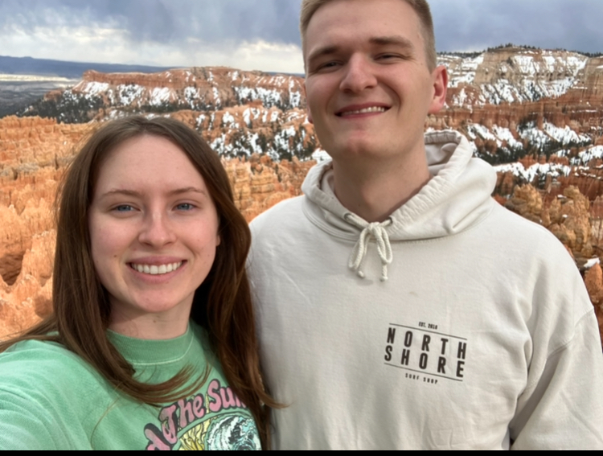

About Me
My name is Joel Jensen. I was born and raised within 20 minutes of the point of the mountain in Utah and Salt Lake County and most recently lived in Lehi. I have been married for 10 months to my wife who is from Missouri. I am studying computer science with a minor in data science, I love to travel, read, and lift weights.
Utah

Official Flag of Utah
Utah is a mountainous desert with beautiful red rocks and snow-capped mountains. It has some of the most beautiful nature in the country and some of the most unique landscapes on earth. With unmatched national parks such as Bryce Canyon, Arches, and Zion, Utah is world-renowned for its breathtaking landscapes and attracts tourists from near and far.